| Quest Name | What to do |
| Pillar dance |
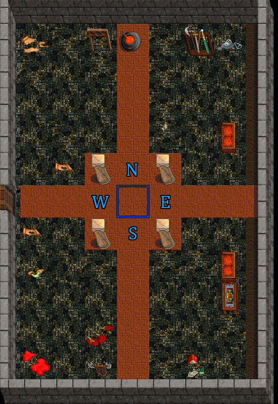 Step in the north hex. then east hex, then south hex, then west hex, finally the middle hex. |
Steve Amulet |
Go to the desert town, talk to Murg. Visit the psi tower and kill a cthon for its egg, take this egg back to murg to receive an amulet. |
Elance Disc / Elance robe. |
Collect all 4 amulets from the psi tower, Strength, Agility, Ep, Intelligence Hold them in hand 1 at a time and step on hexes around teleporter on 4th floor until you "hear a click" Once done with all 4 amulets, step on teleporter hex. Head west to find elance crit, kill and loot the elance robe. Trade the robe to Gorflog in Timmytown for elance or keep it for protection. Note: Gorflog is in the southwest area, last room west from Steve |
Titanium Shield |
Search Pillars (past doom town) or giant keep until you loot a wooden bolt.
Head to Spectre dungeon. Note: Look for a pile of bones around the south end of Cob and climb up, this is the area before UD1 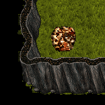 Head to the southwest corner until you find igli, trade the bolt to him for a sash. Note: Igli is behind a hidden wall followed by a locked door You can use a Mujaba skeleton key to open it 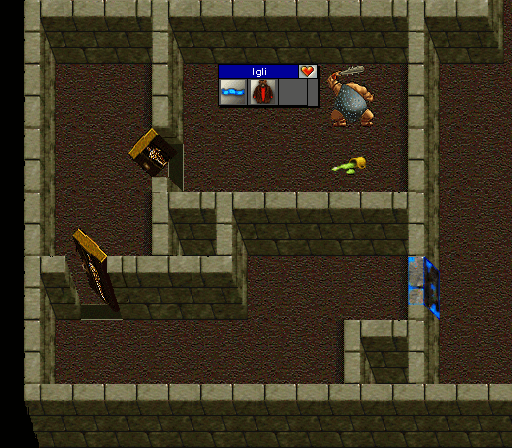 Take the sash to Sasha in the Northeast corner and trade it for a ring. Note: Sasha is behind a hidden wall followed by a locked door You can use a Mujaba skeleton key to open it 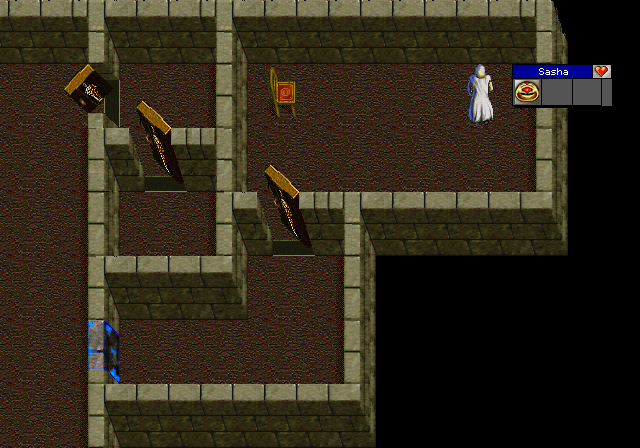 Head into the spectre lair and kill them for a key Note: The spectre lair is in the northwest area behind a wall that needs to be opened. 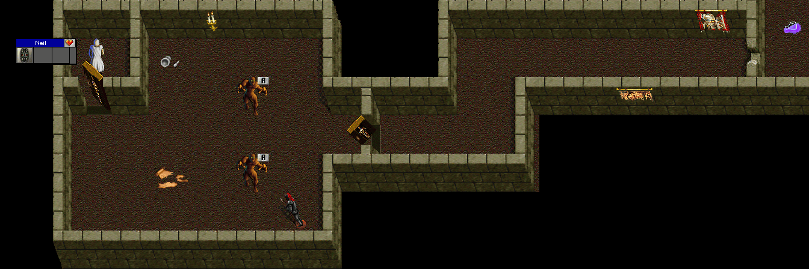 Use the key to open the door to Neil to trade the ring for the moonshield. Take the moonshield to ud2, where you find stairs in a building leading to the titanium shield trader, trade the moonshield and a large yeti fur for the titanium shield. Note: The door to the Titanium shield trader is locked You can use a Mujaba skeleton key to open it 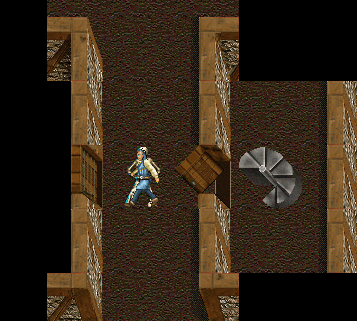 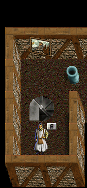 |
| Kite shield (lvl 25 req)  |
Take a Titanium shield and deathsasquatch armor to the trader located above the titanium shield trader. |
| Forged weapons quest | Kill and tan Beetle for scales, 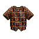 Kill and search kaldor for his dagger. 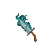 Bring both the scales, the dagger as well as a plain store bought weapon with no adds to Artifex to receive a forged version. The following weapons have forged versions. Dagger, Shortsword, Longsword, Broadsword, Greatsword, Axe, Hammer, Mace, Halberd, Spear |
| Improva weapon quest | Obtain the 4 element scrolls, Wind, Earth, Fire, Water. Bring them to Improva in ud1 with either a forged shortsword, longsword or hammer to receive the improva version of the chosen weapon. |
| Secret locker area access | Hidden in timmytown behind a wall is Ludden, find her and tell her password (Ludden, password) Head over to the desert town and look for Ethelred who is behind some tents guarding a locked door Tell him your password to enter (Eth, the passworld is PASSWORD) |
| Guard Replacement (+100 hp) |
Go to treetown, find drizzle and say replacement. (Driz, Replacement) Once you get the name of the guard, climb back down, head just north and there will be a guard house, go inside and say replacement is "name you got before" (GuysNameInGuardHouse, Replacement is "Name") |
| Graagh's hally +100 hp | Obtain a Graagh's hally, go to the first floor of graagh's castle, look for a well in the center, climb down the well. head east. Go see Duke Moreal, click his name, and click talk button. |
| Juntes +100 hp | Go to the desert village, find Ionas and click his talk button, he will give you a ring for his brother. Head to juntes who is southwest from the desert village. hold the ring and step near Juntes, he will automatically give you another ring. Return to Ionas and hold the ring, click him. |
| Shackle +100 hp | Go to kaldor castle and kill kaldor for a key to the jail cell. once you have the key, open the cell, click the prisonner inside and he will give you a pair of shackles. Go to drizzle in treetown with the shackle in hand, click him. |
Maggio Iv helm |
Find maggio, click his name and click talk button, see what crit to kill by the name he gives. head to desert town, search for this crit. Drag a zoo of crits to him and wait for him to die, once dead, search his corpse for a ring. return to maggio and click him, he gives you an Iv helm which can be padded. |
| Earthcrush prot amulet |
Slay roaming gold dragons around cob until a gold bar drops 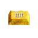 Head over to the desert towns northeast area and look for Audie Trade the gold bar for the amulet |
3 Major quest |
Look for Bob in treetown. he will give you a note to take to someone in timmy town, who will send you to another person in desert town, the third person will take the scroll from you and send you back to bob. bob then gives you 3 majors |
Mini-Fate potion |
Talk to Huddleston in timmy town and get a shop number, head to desert town and tell Shalala the number you were givin. type sha, # to get the bottle. |
Ep pot |
Head to the Psi tower in the cob desert In the psi towers top 3 floors slay cthons until a grub drops 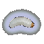 Head over to the Sw Caves and search for the trader located in the southeast area Trade 1 grub for 1 ep pot. Note: The trader vanishes after each trade. If the trader does not respawn, return to the treetown climb up spot, climb up then back down and return to the trader |
| Wis pot 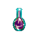 |
Head over to the pillars area or upper giant keep and slay enemies until you obtain a sapphire. Head over to desert towns Nw cave and look for the trader Trade 1 sapphire for 1 wis pot |
| Int pot 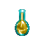 |
Head over to the giant keep area (beyond doom town) and slay enemies until a turnip drops. Head over to the Nw caves and search the south eastern side of the cave for the trader Trade 1 turnip for 1 int pot |
| Will pot 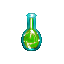 |
Head over to the cobrahn swamps and slay enemies until a packet of mandrake drops 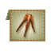 Head over to the cobrahn jungles northeastern area and find the trader Trade 1 packet for 1 will pot |
| Agil pot 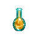 |
Head over to the cobrahn desert or the spectre dungeon and kill until you obtain a brass ring Head over to the timmy town caves northeast area and look for the trader Trade 1 ring for 1 agil pot |
| Con pot 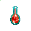 |
Slay enemies around the cobrahn forest (from graaghs castle to the treetown climb up) until a packet of cedar drops 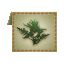 Head to the area around the treetown climb up and search for the trader Trade 1 packet for 1 con pot |
| Str pot 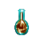 |
Head over to timmy-2 and slay enemies until a silver nugget drops Head over to the Nw caves, in the north area go up the steps to reach the trader Trade 1 silver nugget for 1 str pot |
| Conquerors club entrance | Obtain a chipper staff, kings key, berover sword, goblin king axe, mujaba dagger, banditlord shortsword, graagh hally, lori staff, kaldors mace. Go visit Conquerous located near vanidors lair, after trading all the required items for the key, open the door and enter the conquerors club. 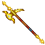 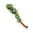   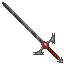  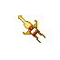 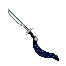 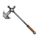 Note: All items must be tied to the account attempting to do the quest |
Kings robe |
Obtain a graaggh hally as well as a lori robe, visit the npc in conquerors club to trade for the robe. |
| Laz lair entrance |
Head to the north area of CC, go up the stairs In the room with 6 'up' stairs, go up the one for your class In the next room, slay Ooga and search the corpse for a key to the locked door  In the next room simply go up the steps In the room with the 4 archers, slay all 4 archers and search their corpses, place all 4 bows onto the SE hex of the center 4 tiles  Once the bows are placed, head up the steps, speak with Recurve who will tell you to bring the bows to him Note: He will not ask for them if they were not placed on the correct tile Say takebow to him for each of the 4 bows Note: place bow in your right hand (recurve, takebow) After the 4th bow he will give you a key  Use the key to unlock the door north of recurve then go up the steps In the next area (teleport puzzle room) step on tiles in the following order N, NW, NW, N, N, NE, E, SE, NE Then go up the steps In the next room, simply go up the steps In the next area (air puzzle room) from the entrance spot, head east (type E in the command box) then head south (type S in the command box) then head east (type E in the command box) then head southwest (type SW in the command box) then head southeast (type SE in the command box) (E S E SW SE) (NE NW E SW SE) also works (Thanks Ken) In this last room, simply go up the steps to enter laz's lair |
| Lani lair entrance |
Head to Lazloths lair and slay him (killshot required to enter lani lair) |
| Thanks to Edfrmfla for the information about titanium shield quest. | |